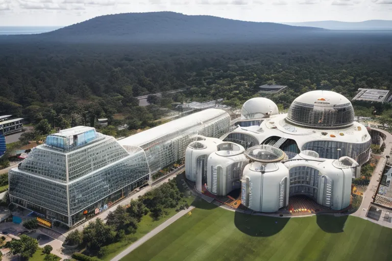
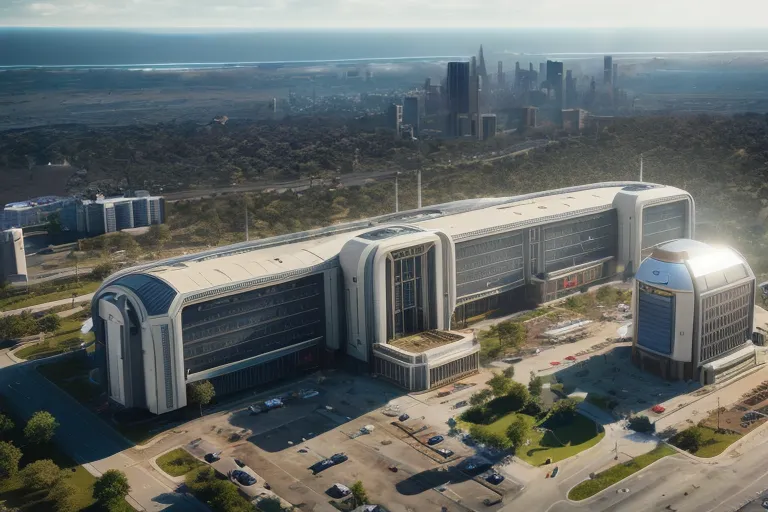
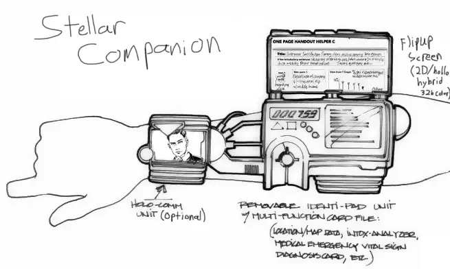

The Houston Technocrats are the product of Houston’s legacy as one of the foremost centers of industry of the pre-war world. When the bombs fell much of Houston survived due to the advanced radar tracking systems at the Johnson Space Center. The Technocracy’s founders were scientists, engineers, CEOs, and visionaries whose unique assets survived the Great War, but whose companies disintegrated with the rest of Houston as time marched on.
Their ancestors sought simply to survive by combining their technologies in the face of the long, slow, rot which faced the now isolated city of Houston. Over the years, as they not only began to survive but to thrive their properties shifted to reclaiming the quality of life their ancestors held.
The Technocracy is a paradise for many, a realm of super science where the most capable, useful, and intelligent rule. Unlike most hotbeds of scientific and industrial might in the post-war world, the Technocracy’s primary goal is simple: Make the best possible life for ourselves.
They are not a militaristic faction and do not seek to conquer or dominate. Instead, they are focused on expanding their knowledge and resources with minimal risk to their accomplishments. The Technocrats focus on trade, exploration, and expand outwards only to claim resources. This brings them into conflict with plenty of groups, many of whom see their comparative-paradise as fruit ripe for the picking.
To help dissuade their would-be attackers, the Technocracy welcomes immigrants who share their vision of a better future. They have set up trade relationships with nearby settlements and factions, exchanging technology and expertise for food, supplies, and other resources. Primarily human resources.
While anyone with scientific knowledge or technical expertise can join the Technocracy proper, everyone else can join the security forces and serve the Technocrats as mercenaries in exchange for perks like health care, shelter that isn’t rotting, and airconditioning. Such people do not get to weigh in on the decisions the faction’s leaders make, nor are they highly respected or valued. Such privileges are reserved for those who can be of use to the core of the mission.
The decisionmakers at the top of the Technocracy are a council of scientists and engineers who make decisions based on scientific evidence and data. They serve to coordinate the many scientists and engineers in the great mission, and issue orders to the security forces from their shining citadel, the HARC.
The majority of the Technocracy’s citizens live in the City of Tomorrow, which is often simply referred to as HARC due to the giant circular building’s extreme prominence in the Technocrat’s culture. The HARC is also home to the Archive, a fortified storage facility where the Technocrats keep scientific knowledge and artifacts from the pre-war world. They constantly search for new knowledge and information that could help them in their research.
Despite their nobel goals, many nearby groups despise the Technocrats, seeing them as wasteful or at the very least willingly aiding and abetting suffering. While true the Technocracy could likely provide such miracles as clean drinking water and abundant food for most of the Texas Badlands, they see such things as short sited. Their claims that such charity would delay the coming of the World of Tomorrow by 200 years typically fall on deaf ears and starving bellies.
The Houston Technocrats formed in the first few years of the post-war World. Several companies within the Woodlands region realized their petty struggles against one another were expending more resources than they were gaining. These companies included:
Arcadia Dynamics: A manufacturer of advanced energy weapons and power armor.
Novatech Industries: A company that specializes in the development of artificial intelligence systems.
Titan Arms: A manufacturer of high-end firearms and explosives for military and civilian use.
Starlight Enterprises: A manufacturing company that specializes in producing high-quality electronic devices, such as computers and communication systems.
The companies combined their remaining security forces and assaulted the survivors holed up in the old Houston Advanced Research Complex, taking it over and many of the scientists and engineers captive. In time, most of the captives were persuaded to accept the companies control and work towards their goal of creating a suitable place to live for themselves.
In time as the founding members died and the factions immediate goals were reached, the Technocrats began to develop the idea they should construct more than a means of comfortable surviving, they should create a place they could thrive. Their continued success lead to the establishment of the City of Tomorrow, by which point several generations had come and gone and the founders had been mythologised.
These people believed their ancestors were more than corporate individuals used to a life of luxury and turned the HARC’s power towards developing long term, sustainable, obtainable, and scalable systems for creating a new world from the ashes of the past. Perhaps inheriting a little of the old capitalist culture, they saw no need to “ship” their “product” before its completion, and consequently did not extend any of their innovations to the Wasteland.
Organization and Culture
The Houston Technocrats are a highly organized faction with a rigid hierarchy based on expertise and merit. The faction's culture is centered around science, logic, and progress. They place a high value on education and innovation, and believe that technology holds the key to the survival and progress of humanity.
The problem with “logic and progress” as a core ethos for an organization is logic is a branching tree not a highway. There are many internal divides within the Technocrats on how best to approach their mission, and even wether or not the mission is still worth pursuing. While there are many groups within the Technocrats with their own nuanced opinions, there are two primary camps:
The majority of the Technocrats prioritize technological advancement above all else, even if it means sacrificing the well-being of some of their own. The other group believes they have a responsibility to use their knowledge and resources to improve the lives of as many people as possible, even if it means slowing down progress.
There are many debates over resource allocation, frequent disagreements about wether or not they should help nearby settlements in need, and similar hardline disagreements. The pro-helping side rebelled once, but was swiftly and brutally crushed. The failed rebellion greatly demotivated the pro-helping side, relegating them to being seen as “bleeding heart crackpots” by many and preventing any real action other than debates and protests. At least, it has so far. Tensions can flare up as new disasters strike the Badlands.
There’s an argument many of the Technocrats make which states they themselves are a disaster facing the Badlands. The areas around their territory were stripped of all useful salvage centuries ago, greatly hampering the survival of other groups nearby the Woodlands. Their expansion displaces people more often than not, and its not like they welcome those outsiders unless they agree to work for them. Working for the Technocrats is no picknick either.
The other side agrees these things all happen, but pointing out the window to the ashes of a former continental empire filled with people dying of cholera, starvation, childbirth, and exposure and saying “Their suffering is so we can put an end to this as quickly as possible.” is a very compelling argument for many people.
Leader
Doctor Lee
The current Council Leader of the Houston Technocrats is Dr. Samantha Lee, a former NASA engineer who survived the Great War and founded the Technocrats shortly thereafter. She is beloved for her status as a ghoul by the rest of the Technocrats, as her head contains all of the pre-war knowledge necessary to access and operate most of the secure systems in the HARC.
While she (and many other ghouls) always have held positions of respect and authority in the technocrats, her rise to Council Leader took over a century and was made possible through her greatest invention: synthskin.
Synthskin is an inorganic material capable of bonding ot organic tissue and working in harmony with it, passing nerve signals and acting like real skin while being far more durable. While initially created as a means of restoring her pre-war appearance, synthskin became one of the Technocracy’s standard first aid kit items, as a simple patch of the stuff slapped over a wound is better than any bandage.
Its primary use is what finally got Dr. Lee the popular support she needed to win the election; a trade deal with the fairly isolationist Ironwood Collective, a group of sapient robots who have many uses for synthskin of their own (in particular, coating their hands / graspers for better tactile feedback). Ironwood’s regular supply caravans laidend with maglev systems, fusion cores, and other high-tech goodies are the key to Dr. Lee’s power.
Dr. Lee is dedicated to the Technocrats mission, and likly to hold power for a long time due to her reputation. This is bad news for the Space Pioneers, whom she despises. In her opinion the end of the world is an opertunity to create something new, while the Pioneers mission is to restore the world that was. Dr. Lee sees them not as fools, but as misguided. A dangerious distinction as she does not underestimate them. Her insistance of the Pioneers being the largest threat to the World of Tomarrow has proven infectious amonst her clocest supporters.
Headquarters

The HARC

The Attached Reasurch Center
The Houston Advanced Research Complex (HARC) is a state-of-the-art research center located in the region known as The Woodlands just north of Houston. It was once co-run by the US Government and Rob-co, and features advanced laboratories, computer systems, and manufacturing capabilities on par with any other state of the art facility on the day the bombs fell.
The HARC is the heart of the Technocrats civilization. It is where their vehicles, robots, armor, computers, and all other systems come from. The only Security Force members to receive any kind of respect are those who guard it, or the many recycling centers which feed the HARC’s manufacturing wings.
The HARC sits in the middle of a large (by Wasteland standards) walled city known as the City of Tomorrow. The walls are relativly low and hidden by the tree line to not spoilthe view from the HARC The city is an oasis of pre-war quality of life where the Technocrats upper and middle classes live in luxury. A realm of hover cars, robot butlers, self expression, and freedom to study and develop whatever niche interest you may have. Luxuries paid for by its residents through constant labor to advance the Technocracy’s capabilities, to work towards the City’s expansion to create The World of Tomorrow (a nation where all can experience the luxuries and pleasures currently available).
The HARC is split into two complexes by a road. The southern complex is known as the Attached Reasurch Center and was converted from an old university building. It presently serves as offices, housing, and personal-lab-space for the Technocrat's scientists. It sits atop a hill overlooking Houston. The primary facility is just across the street and was constructed to serve as an advanced reasurch center for the Defense Experimental Research Projects Initiative. It features many favanced labratories and is entirly self sustaining.
Unique Assets
Plasma Shield
The Plasma Shield is a specialized energy shielding technology developed by the Houston Technocrats for use in close-quarters combat. It is a handheld device that generates a high-energy plasma field around the user, creating a short lived "body glove" which absorbs energy and melts projectiles. The plasma shield is contained in a photonic resonance bubble which prevents its heat from leaching into the environment and melting the ground beneath the user, the user, the users stuff, and everything around them. The Plasma Shield's photonic barrier is breached by high-speed projectiles, resulting in the projectile being incinerated by the high-energy plasma, and remains solid for low energy projectiles and melee strikes causing them to be stopped before hitting the user. Some kinetic energy is still transferred from low-energy strikes, making bludgeoning strikes the shield's weakness.
The Plasma Shield is primarily used by Technocrats shock troops in close-combat scenarios, and is highly effective against other high-tech factions, especially those reliant on energy weapons. However, the device is notoriously difficult to control, and can be just as dangerous to the user as to their enemies if not handled properly. It cannot be activated for long periods as it is air tight, and each device has a dozen or so charges, though the exact number can be as low as 10 depending on how long the device has spent between charges and just how much energy is absorbed and projectiles negated. This is due to the device recycling plasma as much as possible. Each shield generated lasts up to a minute, which results in most of each charge being wasted as the user will need to disable the shield early to breath unless they have an oxygen supply.
Construction Robots
The Technocrats make use of spcilized cosntruction robots to develop land, build their structures, and preform mantance. These robots are highly focused rather than general purpose, and it shows in their design. Their Construction Fleet conists of:
A.R.C. (Automated Reconstruction Construct): A large, bipedal robot designed for heavy-duty construction work. A.R.C. is equipped with a variety of tools, including hydraulic jackhammers and welding torches, and is capable of lifting and moving large objects. Its modular design allows for quick customization and upgrades, making it a versatile and valuable asset on any construction site.
S.A.M. (Structural Analysis Machine): A compact, wheeled robot designed for surveying and analyzing buildings and other structures. Equipped with a variety of sensors and cameras, S.A.M. can quickly assess the condition of a structure and identify areas in need of repair or reinforcement. Its software is constantly updated with the latest building codes and safety standards, ensuring that all construction work is done to the highest level of quality.
F.A.S.T. (Fast Assembly System Technology): A swarm of small, flying robots designed for rapid construction of buildings and other structures. F.A.S.T. robots work together to quickly assemble prefabricated building components, such as walls and roofs, into a complete structure. This system allows for incredibly fast construction times, making it ideal for emergency shelters and other situations where time is of the essence.
D.A.R.T. (Demolition and Reconstruction Technology): A specialized robot designed for deconstructing and recycling buildings and other structures. Equipped with powerful cutting tools and a sophisticated sorting system, D.A.R.T. can quickly and efficiently break down a structure into its individual components, which can then be recycled or reused in new construction projects. This system helps to reduce waste and promote sustainable construction practices.
Hyperion
The Hyperion is a highly advanced quantum computer system that was developed by the Houston Technocrats to revolutionize computing and data processing. The system consists of a series of interconnected quantum processors, which are housed in a massive, climate-controlled facility that spans several floors. The processors are encased in special containers that shield them from electromagnetic interference and other environmental factors that could disrupt their delicate quantum states. The computer is controlled via a sophisticated user interface that allows researchers and engineers to input complex data sets and receive highly detailed analysis in real-time.
The Hyperion project was launched in the years leading up to the Great War as part of Novatech Industries' efforts to advance computational technology. The system was originally designed to be a powerful tool for data analysis, but as the war approached, Novatech recognized the potential military applications of the technology. They redirected their efforts towards creating a quantum computer system that could be used to develop advanced weapons and defenses. Despite setbacks caused by the war, Novatech was eventually able to complete the Hyperion. The computer has been used for a variety of applications, including the development of advanced energy weapons and the simulation of complex battle scenarios.
Genetic Engineering
The Technocrats have recently begun to dabble in genetic engineering. Their inventions are all first generation, and have many drawbacks and flaws, but work most of the time. Side effects vary in seriousness per treatment and per batch, making exactly what can go wrong with them hard to predict.
Regenerative Tissue Technology (RTT): RTT is a suite of genetic engineering technologies that enables the user to regrow or repair damaged tissue. The technology works by manipulating the genes that control cell growth and differentiation, effectively telling cells to divide and differentiate into the desired tissue type. The Houston Technocrats developed RTT to help soldiers heal quickly from injuries sustained in combat. The most common application of RTT is in the form of a healing serum, which can be injected into a wound to accelerate the healing process.
Synthetic Organ Replacement Technology (SORT): SORT is a genetic engineering technology that enables the creation of fully functional, synthetic organs. The Houston Technocrats developed SORT to address the shortage of organ donors in the wasteland. The technology works by extracting a patient's genetic information and using it to create a personalized, synthetic organ. SORT is a major breakthrough in the field of organ replacement, as it eliminates the need for organ donors and greatly reduces the risk of organ rejection.
Bioengineered Super Soldiers (BSS): BSS is a genetic engineering program that aims to create soldiers with enhanced physical and cognitive abilities. The Houston Technocrats developed BSS to gain a military advantage in the wasteland. The technology works by introducing genetic modifications that enhance strength, speed, agility, endurance, and mental acuity. BSS soldiers are trained to be highly efficient killing machines, capable of carrying out complex missions with minimal supervision.
Climate Adaptation Technology (CAT): CAT is a genetic engineering technology that enables the user to adapt to extreme climate conditions. The Houston Technocrats developed CAT to help colonize inhospitable environments on other planets. The technology works by introducing genetic modifications that enable the user to withstand extreme temperatures, pressure, and radiation. CAT has potential applications beyond space exploration, as it could be used to help humans adapt to the changing climate on Earth.
Virus Resistance Technology (VRT): VRT is a genetic engineering technology that enables the user to resist viral infections. The Houston Technocrats developed VRT to address the threat of bioterrorism in the wasteland. The technology works by introducing genetic modifications that enhance the body's immune response to viral infections. VRT has potential applications beyond bioterrorism, as it could be used to help humans resist other types of infectious diseases.
Stellar Companion

Stellar Companion Design Sketch
The Stellar Companion was a highly advanced personal computing device developed by Starlight Enterprises. It was a wrist-mounted device that was similar in appearance to the Pip-Boy, but with a more streamlined and modern design. The deviation from the retro-futurism style which had remained a staple of American products and culture since 2048 harmed its sails to a notable extent, but not as much as its higher cost.
The Stellar Companion was smaller and more lightweight, making it easier to wear for extended periods of time. It had a holographic display instead of a screen, which allowed for more information to be displayed at once and made the device feel more futuristic. Supporting these themes was a built-in voice recognition system that could be used for hands-free operation.
The Stellar Companion’s capabilities and sleek formfactor (which could be hidden beneath the loose sleeve of an overcoat) made it quite popular with wealthy businessmen in need of long range communication with the home office and clients. This created its market niche, with only tech nerds and a few higher ranking military officials making up the rest of its market.
One of the key differences between the Stellar Companion and the Pip-Boy was its advanced communication capabilities. The device was able to interface with a wide range of communication networks, allowing users to stay in contact with other users and access a variety of information resources. This function differed from a mobile phone or radio set in that it worked via satellite connections to relay terminal data. While it could be used for audio-communication the bandwidth was quite limited, producing audio quality most fond unacceptable.
The Stellar Companion also had a highly advanced sensor suite, allowing users to collect and analyze data about their environment. This made it an ideal tool for scientists, explorers, and other professionals who needed to collect and analyze data in the field. This function was rarely used by the majority outfits users, save for navigation via the mapping function.
Unlike the Pip-Boy, the Stellar companion’s mapping system made use of the terminal link system to share information between all units. If one user left a note or pin on the map, everyone could read it. The majority of surviving Stellar Companions have access to this map information, which provides vital information on pre-war establishments and locations. Post-War manufactured Companions do not have access to this data as the satellite network was repurposed by the Technocrats.
The most distinctive feature of the Companions was the one for which they were named. Each contained a RobCO processor similar to the AI core of a Mr. Handy, albit stripped all functions needed for controlling a robot for size and power concerns. The remaining AI functions provide the user with a companion, a friendly and helpful advisor who can make use of the device’s systems better than you can and will do so to assist you, anticipating your needs and following your verbal instructions.
In the post-war era the devices are common enough in the Houston area, more so that Pip-Boys due to the factory and distribution center being located in the city. Many wasters make use of them as the AIs developed over time (provided they remained powered on, undamaged, and in use) developing new capabilities to suit the post-war world, such as using the mapping technology to determine the relative safety of areas, creating hacking routines to help salvage pre-war materials, and other things one might expect a computer that cares for its users to do when it can create its own subroutines and understands the old world ended just as well as the old Ghouls do.
The Houston Technocrats make use of Companions as well. They primarily use the Model X, which was designed 18 years ago and is freshly manufactured. While they lack the charm and robust survival assistance of wasteland salvaged Companions, they have systems such as Tactical Net Link and Sky Eye which combine to make them a soldier’s dream.
Synthskin
Synthskin is an inorganic cybernetic material which can bond with organic tissue or mechanical systems, granting the former all of the benefits of real organic skin while being far more durable, and doing the same for the latter assuming the correct hardware is installed to permit the sensations of touch, temperature, pleasure, and pain are installed on the machine first.
It is prized by ghouls who can have synthskin grafted over their bodies to grant them a more human appearance, as well as restore any lost sense of touch they have experienced due to their decay. While a synthskin “glove” can’t repair their internal organs, restore their hair, or mend their ragged voice it does make humans far more willing to tolerate their presence as they no longer look like a walking corpse.
Robots enjoy the material as well, seeing it as a far better manipulator grip-surface than rubber or silicone due to its touch-granting properties. Some robots, those with true AI in their cores who wish to be more human, also value it as a means of allowing them to live a more human-like experience.
Synthskin can be made in any color one can find a pigment for. While peach, yellowish tan, and brown are the most commonly created for obvious reasons, it is also available in most primary and secondary colors, as well as a glow-in-the-dark green and quantum blue variant.